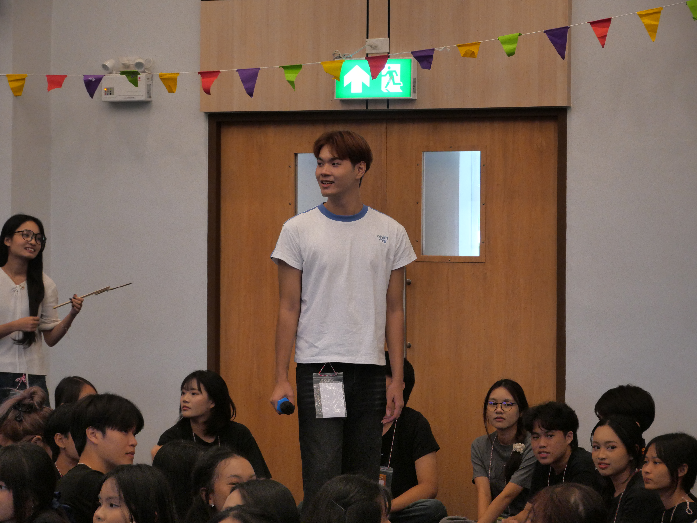

KENDO
KMITL BUSINESS SCHOOL
profile
ABOUT ME
PHONLAKRIT CHUWONGTHANANAN
skill
MC HOUSE OF KBS

ได้ทำหน้าที่พิธีกรประจำคณะบริหารธุรกิจ โดยได้รับหน้าที่ต่าง ๆ มากมายตามความเหมาะสมของงาน ทำให้ได้พัฒนาศักยภาพที่ดี และการทำงานเป็นทีมร่วมกับเพื่อน ๆ คนอื่น รวมถึงได้มิตรภาพดี ๆ จากการเป็นพิธีกรของคณะบริหารธุรกิจ
contact